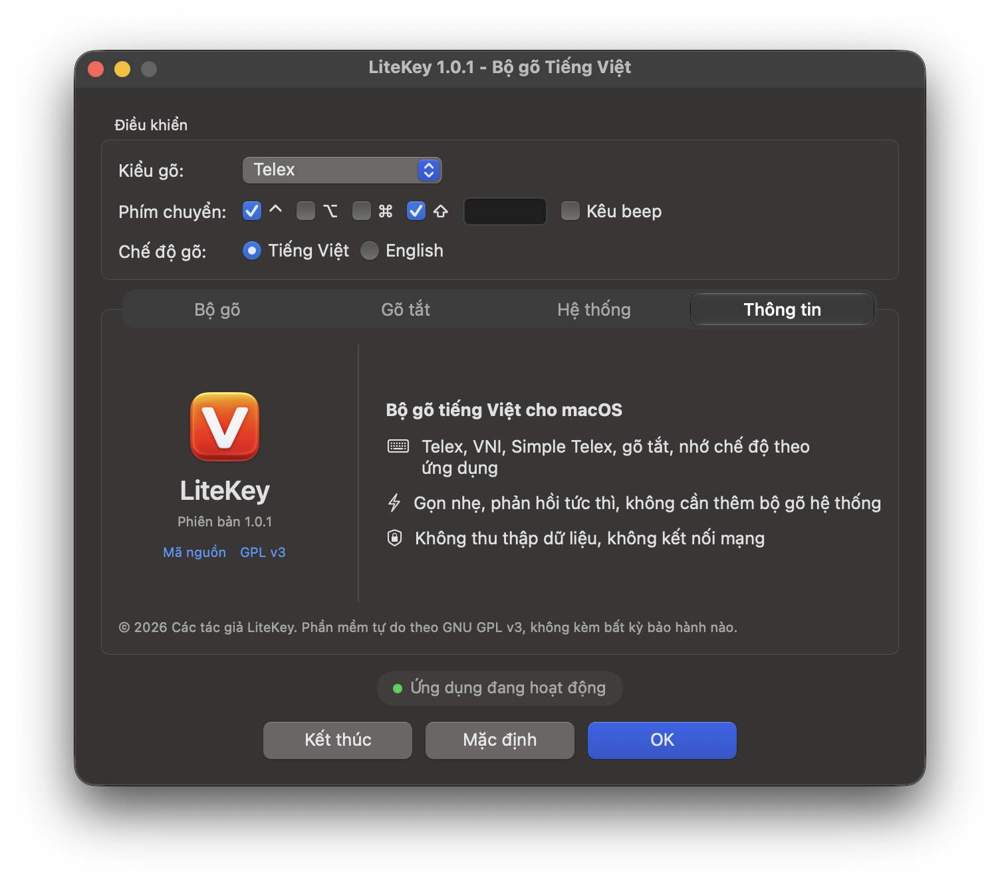

Bộ gõ tiếng Việt cho macOS · Phiên bản 1.0.2
Gõ tiếng Việt trên Mac, đúng từng dấu.
LiteKey nằm gọn trên thanh menu. Gõ Telex hay VNI đều đúng dấu, không mất chữ, kể cả khi bạn gõ thật nhanh trong trình duyệt, VS Code hay Terminal.
- macOS 13 trở lên
- Apple Silicon (M1 trở lên)
- Miễn phí, GPL v3
Vì sao LiteKey
Gọn nhẹ, chỉ giữ những gì bạn dùng mỗi ngày.
Gõ chính xác
Gõ nhanh vẫn không mất chữ, không loạn dấu trong trình duyệt, VS Code, Slack, Messenger hay Terminal.
Nhẹ và nhanh
Thiết kế để xử lý mỗi phím dưới 1 ms. Gần như không tốn tài nguyên khi bạn không gõ.
Riêng tư
Không kết nối mạng, không thu thập dữ liệu, không cần tài khoản. Chữ bạn gõ chỉ nằm trên máy bạn.
Quen tay ngay
Telex, VNI, gõ tắt và phím chuyển quen thuộc. Nhập bảng gõ tắt có sẵn bằng một nút bấm.
Kiểm chứng bằng dữ liệu
Kiểm thử trên từng ca gõ.
Engine gõ viết bằng Swift. Mỗi bản build chạy lại toàn bộ bộ dữ liệu chuẩn và phải ra đúng từng ký tự.
ca kiểm thử chạy mỗi bản build
- Tuỳ chọn gõ2.413
- Âm tiết Telex2.200
- Âm tiết VNI2.200
- Từ tiếng Anh, tự khôi phục1.397
- Simple Telex1.042
- Gõ tắt902
- Sửa và xoá lùi900
- Câu dài500
- Viết tay31
| Kiểu gõ | Phím gõ | Kết quả |
|---|---|---|
| Telex | tieengs vieetj | tiếng việt |
| Telex | dduowcj | được |
| Telex | nguowif | người |
| Telex | thuyr | thủy |
| Telex, dấu kiểu mới | thuyr | thuỷ |
| Telex | ass | as |
| Telex | ww | w |
| Telex | class | class |
| VNI | d9u7o7c5 | được |
| VNI | tie61ng vie65t | tiếng việt |
Trích từ Tests/fixtures/handwritten.tsv. Cột kết quả là đầu ra chuẩn mà engine phải khớp.
Tính năng
Những gì bạn cần để gõ, không thừa.
Kiểu gõ và chính tả
- Telex, VNI, Simple Telex 1 và 2
- Đặt dấu kiểu cũ (òa, úy) hoặc kiểu mới (oà, uý), bỏ dấu tự do
- Kiểm tra chính tả và tự khôi phục từ tiếng Anh: gõ
classvẫn ra class - Gõ nhanh (
cc→ ch,gg→ gi), gõ tắt phụ âm đầu và cuối, tự viết hoa đầu câu
Gõ tắt
- Bảng gõ tắt riêng, tự viết hoa theo cách bạn gõ:
btw→ by the way - Dùng được cả khi đang ở chế độ tiếng Anh
- Nhập và xuất file gõ tắt tương thích UniKey
Theo từng ứng dụng
- Nhớ chế độ Việt/Anh riêng cho từng app
- Danh sách app luôn gõ tiếng Anh
- Tự tạm dừng khi bạn chuyển sang bộ gõ hệ thống khác
Tiện ích
- Chuyển Việt/Anh bằng ⌃⇧, ⌥Z, ⌃⌥ hoặc ⌃Space
- Giữ ⌃ để tạm tắt kiểm tra chính tả, giữ ⌘ để tạm tắt bộ gõ
- Cảnh báo khi ô mật khẩu đang giữ bàn phím hoặc khi có bộ gõ tiếng Việt khác chạy cùng
- Khởi động cùng macOS, tuỳ chọn hiện trên Dock
Bảng điều khiển
Mọi tuỳ chọn trong một cửa sổ.
Phía trên là Kiểu gõ, Phím chuyển, Chế độ gõ. Phía dưới là bốn tab Bộ gõ, Gõ tắt, Hệ thống, Thông tin. Bạn không phải học lại gì cả.
Đang dùng bộ gõ tiếng Việt khác? Thoát bộ gõ đó trước khi gõ để hai bộ gõ không xử lý phím chồng lên nhau.

Cài đặt
Ba bước là gõ được.
-
Tải và kéo vào Applications
Tải bản mới nhất ở trang Releases, giải nén rồi kéo LiteKey vào thư mục Applications. Chưa có bản phát hành phù hợp thì build từ mã nguồn.
-
Cấp quyền Trợ năng
Mở LiteKey, bật công tắc LiteKey trong System Settings → Privacy & Security → Accessibility. Quyền này cho phép bộ gõ đọc phím và thay bằng chữ có dấu.
-
Bắt đầu gõ
Biểu tượng V xuất hiện trên thanh menu. Bấm ⌃ ⇧ rồi thả để chuyển giữa tiếng Việt và tiếng Anh.
Quyền riêng tư
Những gì bạn gõ chỉ nằm trên máy bạn.
Bộ gõ nào trên macOS cũng phải đọc phím bạn bấm. Vì vậy LiteKey công khai toàn bộ mã nguồn để ai cũng kiểm tra được.
- Không kết nối mạng
- Không có mã gửi dữ liệu ra ngoài, không analytics, không kiểm tra cập nhật ngầm.
- Không lưu nội dung gõ
- Phím được xử lý trong bộ nhớ rồi bỏ đi. Log chẩn đoán mặc định tắt, chỉ chạy khi bạn tự bật để gửi kèm báo lỗi.
- Cài đặt lưu cục bộ
- Mọi tuỳ chọn nằm trong UserDefaults của máy, không cần tài khoản.
- Mã nguồn mở, GPL v3
- Viết 100% bằng Swift, đọc được trên GitHub.
Hỏi đáp
Câu hỏi thường gặp
Gõ không ra dấu hoặc bị mất chữ?
Kiểm tra bộ gõ của macOS (góc phải thanh menu) đang là ABC và không có bộ gõ tiếng Việt nào khác chạy cùng. Nếu có, LiteKey hiện ⚠︎ trên biểu tượng và ghi rõ tên bộ gõ cần tắt.
macOS báo không mở được ứng dụng?
Vào System Settings → Privacy & Security, bấm Open Anyway ở dòng báo LiteKey.
Đã cấp quyền Trợ năng nhưng vẫn không gõ được?
Sau khi cập nhật LiteKey, macOS đôi khi giữ quyền của bản cũ. Xoá LiteKey khỏi danh sách Accessibility bằng nút −, mở lại LiteKey và cấp quyền lại.
Máy Mac chip Intel có dùng được không?
Bản phát hành chỉ dành cho Apple Silicon (M1 trở lên). Script build.sh có thể build bản universal với ARCH="arm64 x86_64", nhưng bản chạy trên Intel chưa được kiểm thử.
Gỡ LiteKey thế nào?
Thoát LiteKey từ menu, xoá app trong Applications, rồi xoá LiteKey khỏi danh sách Accessibility.
Thử LiteKey ngay hôm nay.
Miễn phí, không quảng cáo, không tài khoản.